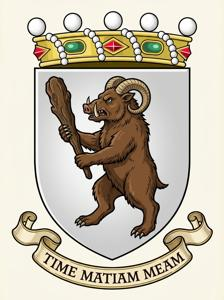

House of Zorza - DRAFT


The Barons Zorza (Zgur. and Degl. Zorza, Glag. ⰈⰑⰓⰈⰀ) were one of the oldest noble families of Former Upper Pannonia (FUP). Their vast, thinly populated estates lied in the Nehozsi Vrehi mountains, far from towns and trade routes. The family had always kept to itself: with few exceptions, its members held no state office and took no part in the country's politics.
Early history
The origin of the name Zorza is unknown. Its resemblance to the Polish zorza, “dawn”, is most likely a coincidence. The name is almost certainly not Slavic; the best-supported theory derives it from the name “Giorgio” in its Venetian pronunciation, Zorzo. The Zorzas themselves claim to have lived in the Nehozsi Vrehi since prehistoric times, descending from tribal chieftains of a pre-Slavic or even pre-Indo-European age. The legend may hold a grain of truth. The family's heraldry and customs are deeply archaic, and many Zorzas, past and present, bear a second name alongside their Christian one — strange names that cannot be traced to any known language.
The Zorzas first appear in the historical record in the early 12th century, as stubborn opponents of the Bregovo prince-bishops, patrons of the Klykov monastery, which stood on their land, and defenders of the Slavic Glagolitic liturgy. In the mid-12th century, Baron Gamildo Zorza led the Pannonian nobles' resistance to Prince-Bishop Miklosz. In 1347, Krico Zorza was among the rebellious barons killed in the Visztica massacre, staged by Prince-Bishop Benedykt “the Butcher”. After the Ottoman conquest, unlike most of the local nobility, the Zorzas stayed and went on ruling their mountains as nominal vassals of the Sultan. While endless Austro-Turkish wars laid waste to the Pannonian plain, the remote highlands lived in peace. By the 17th century, Zorzsin Castle, the seat of the head of the house, had grown into a small town, second in size only to the sancak capital, Kuzgun Qalesi.
During the Great Turkish War, as the Habsburgs retook Hungary and Upper Pannonia from the Ottomans, many mountain barons sided with the Turks. The Baron Zorza of the day, Heleiter, sent troops to aid the Austrians instead. His reward was the land confiscated from the pro-Turkish barons, which made his family the richest and most powerful in the highlands for good. Throughout the 18th century, the Zorzas ruled the region as practically independent lords, answering only nominally to the military authorities in Rabenburg. Life there remained thoroughly medieval, or older still, in its manners and customs.
Heraldry, reputation and traditions
The Zorza coat of arms show, on a silver field, a creature known as the pusczerj: a mythical monster in the shape of a bear, with boar's tusks and ram's horns, holding a club in its paw. The Latin motto Time matiam meam means “Fear my club”. The arms were officially granted only in the 18th century, but the imagery is far older: Bronze Age petroglyphs in the area already depict the pusczerj with a club — or a giant phallus.
Among townspeople and lowlanders, the Zorzas had a firm reputation as barbarians: simple, untamed children of nature, devoted to their half-pagan customs. The Zorzas knew this stereotype, liked it, and did their best to live up to it. The family recognized only three pursuits worthy of a man — hunting, feasting and war — and war meant daring raids rather than service in a regular army. Until the Upper Pannonian Military Frontier was abolished, the barons supplied recruits and served themselves only in irregular Grenzer units. Many were so devoted to hunting that they lived an almost nomadic life, roaming the forests for months on end. Town life, learning, respect for the law and polite manners were held in contempt. Only in the early 19th century did the ideas of the Enlightenment begin to seep into the family.
TO BE CONTINUED